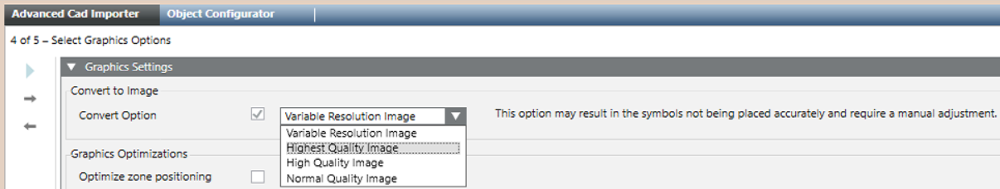
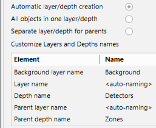
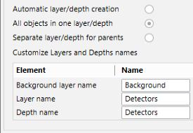
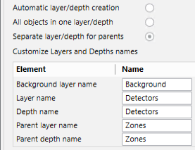
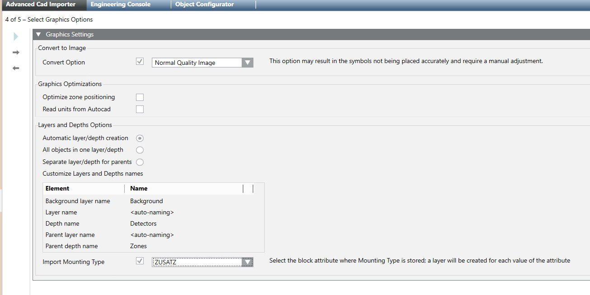

Select Graphics Options
- You are on page 4 of 5: Select Graphics Options.
- In Convert to Image, select how to import the CAD drawing. Do one of the following:
- Leave the Convert Option check box unselected to create an XPS image. This is the recommended option for best quality graphics.
In case of large and complex drawings, you may instead want to consider a conversion to improve display performances. - Select the Convert Option check box to convert the vector drawing into a raster format, which is faster to display.
Depending on the image quality and performances you need (lower quality corresponds with better performances), choose one of the following conversion options:
- Variable Resolution Image (5 images, used alternatively, from normal up to very high quality)
- Very High Quality Image
- High Quality Image
- Normal Quality Image
NOTE 1: This is the same option available in the Graphic Editor as Convert to Image, see AutoCAD Importer.
NOTE 2: The image conversion may result in the symbols not being placed accurately and require a manual adjustment.
Although the tool performs an automatic rearrangement after the image resizing, the fire object symbols may be slightly displaced from their original position.
To ensure the best results, make sure to check the symbol placement after the import with image conversion, and manually correct possible positioning inaccuracy. 
- In Graphics Optimizations, select the Optimize zone positioning check box to correct a possible misplacement of the parent objects, typically the fire zones.
In default mode, the zone position is determined as the central balanced point between detectors.
Selecting the Optimize Zone Positioning results in the zone symbol being placed in the position of the most central detector. - Select the Read Units from CAD check box to preserve the original CAD dimensions, without removing the white frame around the drawings.
In the Desigo CC graphic, in Graphic Properties > Graphic, the Logical Scale factor and Logical units are automatically set. - In Layers and Depths Options, do one of the following (see the example in Layer and Depth Import Options Example):
- Select Automatic layer/depth creation to create a single depth including layers for each CAD object type and subtype.
A second depth is created for parent objects that are not present in the CAD drawing, also separated in type/subtype layers.
If parent and child objects are both present in the CAD drawing, they are imported in the first depth, and then the grandparent objects are added separately in the second depth.
The table that appears below displays the resulting layers and depths Name, which you cannot customize.
Note that layer names will be given from the object types/subtypes (<auto-naming>).
Select All objects in one layer/depth to create a single depth and a unique layer for all CAD objects and parents.
Grandparent objects are also added for the parent objects that are present in the CAD drawing.
In the Name column of the customization table, you can see and customize depth and layer names.
NOTE: This option may result in the detector and zone symbols being overlapped and not properly visible.
Make sure to check the resulting graphics and correct any overlapping problems. - Select Separate layer/depth for parents to create a single depth and a unique layer for all CAD objects imported from the CAD drawing, and then create a second depth with a unique layer for the parent objects.
If parent and child objects are both present in the CAD drawing, they are imported in the first depth, and then the grandparent objects are added separately in the second depth.
In the Name column of the customization table, you can see and customize depth and layer names.
- (Optional) Select the Import Mounting Type check box and the block attribute where Mounting Type is stored.
- Click .
